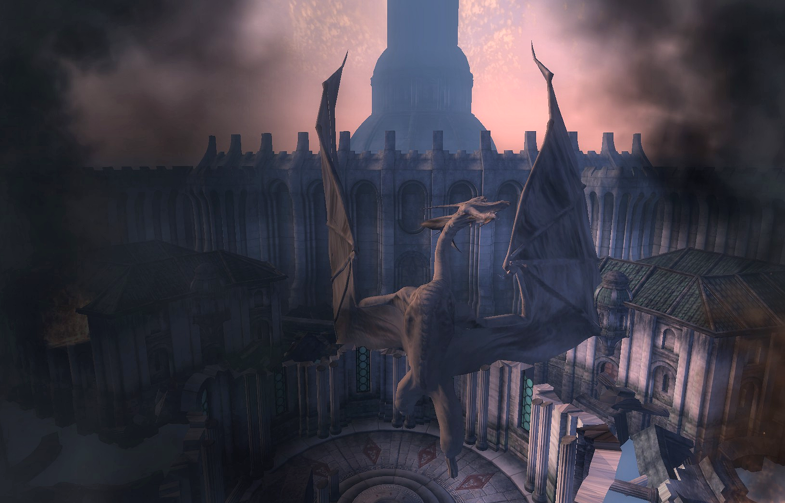
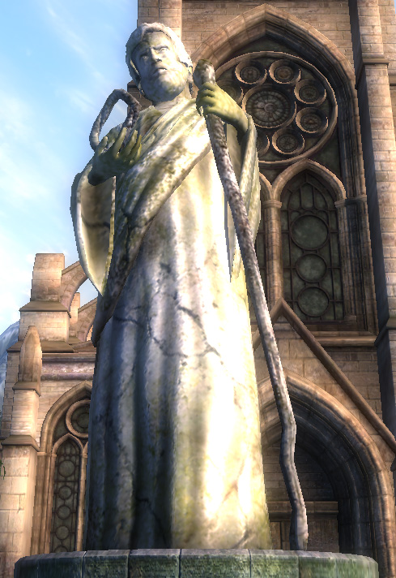
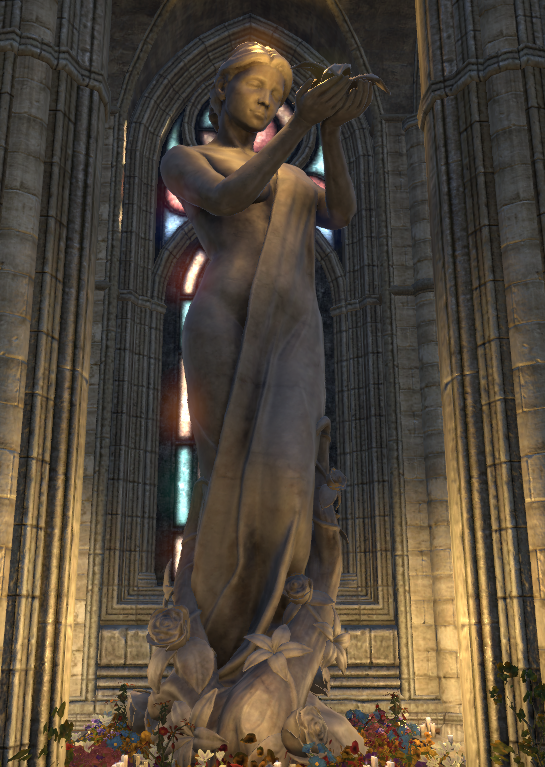
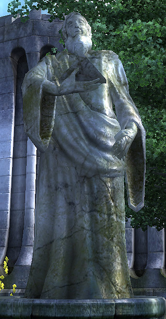
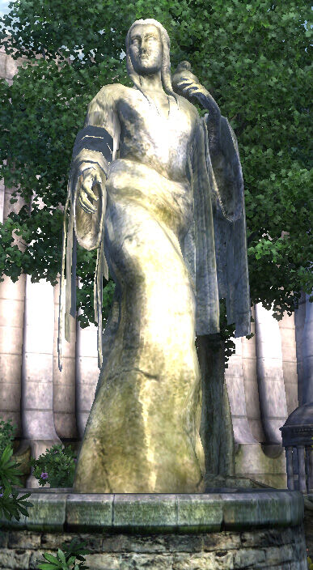
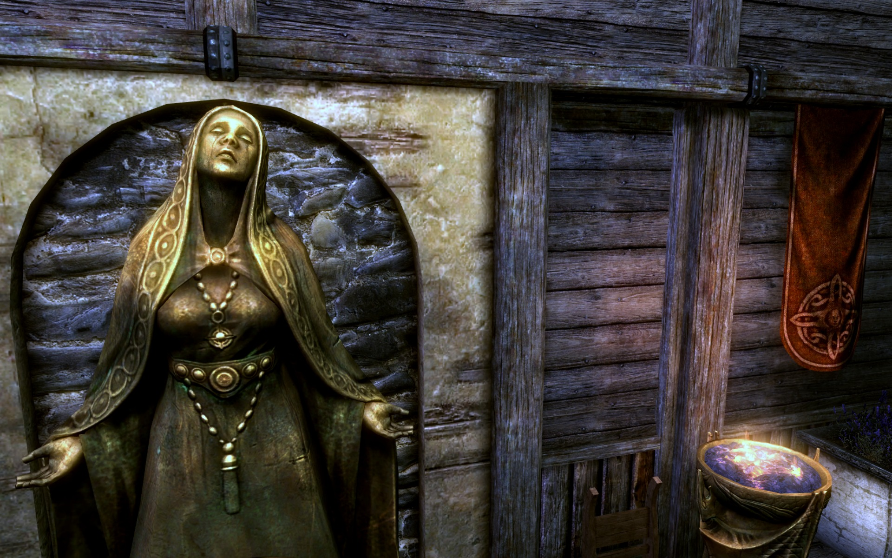
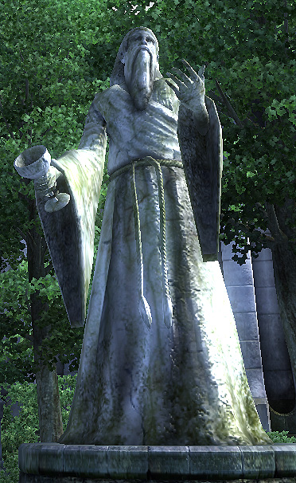
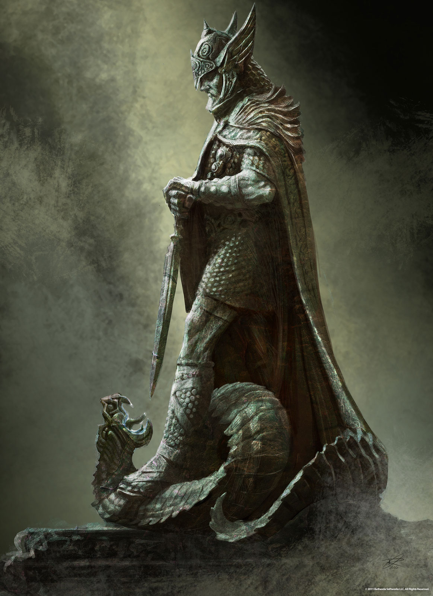
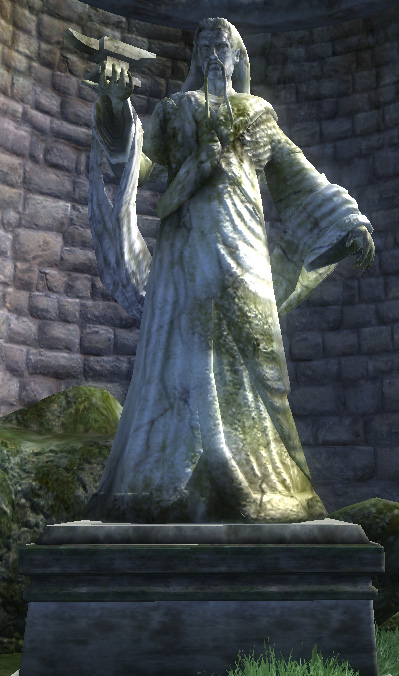

The nine divines, or the eight and one, are the eight et'ada that gave their divinity to help Lorkhan create Mundus and the apotheosized version of Tiber Septim, Talos. Below is shown a stained glass depiction of the nine divines along with information about each aedra in tabs. Aedra means "our ancestors" whereas daedra means "not our ancestors".
Akatosh is the dragon god of time and the chief deity of the nine divines pantheon. He is one of three deities alongside lorkhan and mara who is found in every Tamrielic religion, each race has a different take on religion, with some worshipping the divines and more and some clinging only to the divines. Akatosh is considered the god-defender of the empire of man. He ended the oblivion crisis, with the help of the hero of Kvatch and by the summoning and sacrifice of Martin Septim with the amulet of kings, by defeating and banishing Mehrunes Dagon from Mundus in the late 3rd era. Akatosh is also considered to be the same as the elven Auri-El who all elves claim descendance from. Below is the petrified avatar of Akatosh who vanquished Mehrunes Dagon and banished him from Mundus in the temple of the one in the imperial city.

Arkay is the god of the cycle of life and death and of mortals and burial rites. Some say that Arkay's life began as a mortal and that he earned a place amongst the gods. Whether or nor Arkay was always a deity or became one through apotheosis is unclear. Although he is thought to be the son of Akatosh which would imply that he was always a deity. Arkay's clergy are staunchly in opposition to the practice of necromancy, as it profanes the cycle of life and death and disrespects Arkay. The Nords know him as Orkey, the Altmer know him as Xarxes and the Yokudan Redguards know him as Tu'whacca. Below is shown a statue of Arkay in Cyrodiil.

Dibella is the goddess of beauty, love, art and music. Dibella has nearly a dozen unique cults, some dedicated to women, others to artistry or aesthetics, some cults are even devoted to erotic instruction. She has a dedicated lodge of knights who protect her temples from the followers of Sanguine, the daedric prince of hedonism, the Order of The Lily. They are mainly prominent in the provinces of High Rock and Hammerfell. In the Nordic pantheon, she is thought of as being the wife of Shor (the Nordic version of Lorkhan). Below is a statue of Dibella.

Julianos is the patron god of wisdom and logic, he is also the father of language and mathematics. He is known as Jhunal to the Nords. The Bretons are some of the most devout worshippers of Julianos. The monastic orders of Julianos are also the keepers of the legendary Elder Scrolls which can blind you just by looking at them. His blessing cures all disease, like other aedra, but it also increases intelligence and magicka (capacity to cast magic). Below is a statue of Julianos in Cyrodiil.

Kynareth is the godess of air, wind, sky and the elements. She is called Khyne by the Nords, Kin by the Kothringi, Khenarthi by the Khajiit, and Tava by the Redguards; she is a goddess of many names. Among the Nords, she is also believed to be one of Shor's wives. She is said to have gifted the power if the thu'um to the first heroes of the Nords via Paarthunax. This is how the Greybeards were formed. The Khajiit see Khenarthi as a messenger for the daedric prince Azura whom they revere deeply. The Yokudan Tava is said to have lead the Redguards to Tamriel after the destruction of thei home continent, Yokuda. Below is shown a statue of Kynareth from Cyrodiil.

Mara is known as the mother goddess, she is the goddess of love and compassion. She is known as a handmaid of Kynareth in Nord Skyrim. Depending on who you ask, Mara is either a wife or concubine of either Akatosh or Lorkhan. It is said that Arkay was apotheosized by Mara. She may or may not be Arkay's mother and was either a wife or concubine to Akatosh or Lorkhan or both. She is known as Morwha by the Yokudan Redgaurds. Below, a shrine to Mara is shown. Mara is also the goddess under whose authority and name people get married in Tamriel.

Stendarr is the god of compassion, mercy, justice, charity, luck and righteous rule by might and merciful forbearance. Stendarr is the inspiration for rulers and magistrates in Tamriel and the patron god of the imperial legion. His origin is Nordic and the Altmer see him as an apologist for mankind and their encroachment into Elven affairs. Stendarr is said to have accompanied Tiber Septim in the latter years of his life. The vigilants of Stendarr are radical clergy and followers of Stendarr who wish to root out all daedra worship and destroy the undead and vampires. They are somewhat misguided in their efforts however, as Stendarr is a god of mercy and they are merciless. The Crusaders is a knight's order and lodge dedicated to protecting the temples of Stendarr and finding his artifacts and relics so they can safekeep them. Stendarr has many devout worshippers, sometimes too devout and leaning toward radical. Below is shown a statue of Stendarr.

Talos is the hero god of mankind, he is the conqueror god of might, honor, state, law and man. Talos was once a dragonborn man who united Tamriel through conquest by way of his might and the might of his Imperial armies after he usurped the imperial throne from Cuhlecain. He is the founder of the third empire of man and of the Septim dynasty whose dragonfires kept Mundus safe from daedric invasion for centuries. Talos is known as Ysmir to the Nords. After the signing of the White-Gold Concordat between the Third Empire of Man and the Third Aldmeri Dominion, Talos worship was humiliatingly banned in the empire though many still worship Talos in secret. The Altmer don't like Talos because they don't see him as a legitimate god because he was once human. They want to keep the divines as exclusively those associated with Elven ancestry, which Talos isn't of. Below is a statue of Talos.

Zenithar is the god of work and commerce, the trader god. He's also the god of honesty and implores his followers to never steal. He is known by the Bosmer and Bretons as Z'en. Labor is the main way of worshipping Zenithar as it is the spiritual fruits of hard labor that glorify Zenithar. Zenithar is mainly worshipped by field workers, merchants and middle nobility though his following is quite diverse. Zenithar is known as Zeht by the Redguards and Z'en by Bosmer and Kothringi. Below is a statue of Zenithar.
